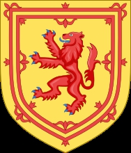

Konung av Scotland. Blev 54 år.
1274-07-11 Scotland. [1]
1324.
1329-06-07 Cardross, Scotland. [1]
Var Scotlands kung 1306-1329
Robert I av Skottland
Hoppa till navigeringHoppa till sök
Uppslagsordet ”Robert Bruce” leder hit. För andra betydelser, se Robert Bruce (olika betydelser).
Robert I
Målning av Robert I från 1600-talet
Kung av Skottland
Regeringstid 25 mars 1306–7 juni 1329
Kröning 27 mars 1306 i Scone
Företrädare Vakant, dessförinnan John Balliol
Efterträdare David II
Gemål Isabella av Mar
Elizabeth de Burgh
Ätt Huset Bruce
Far Robert Bruce
Mor Marjorie av Carrick
Född 11 juli 1274
Turnberry Castle i Ayrshire
Död 7 juni 1329
Cardross i Dunbartonshire
Begravd Dunfermline Abbey
Heraldiskt vapen
Robert I av Skottland eller Robert (the) Bruce, född 11 juli 1274, död 7 juni 1329, var först earl av Carrick, Scotland och sedermera kung av Skottland (1306). Han var sonson till Robert Bruce av Annandale och morfar till Robert II av Skottland.
Biografi
Robert grep makten efter att ha mördat sin främste rival om tronen, John Comyn, vid altaret i kyrkan i Dumfries, varefter han fördrev de engelska tjänstemännen i Skottland och lät kröna sig 1306 i Scone. Till en början förmådde han emellertid inte hålla stånd mot engelsmännen, utan måste fly till Hebriderna. Han återvände snart och tillfogade fienden stor skada, men måste likväl upprepade gånger fly till Carrickbergen. Så småningom fick han krigslyckan med sig, och 1310 tvingade han Edvard II sluta stillestånd med skottarna. Då Robert gjorde ett härjningståg i norra England, återkom Edvard med 30 000 man till Skottland, men de blev besegrade vid Bannockburn, 1314, trots att Robert inte hade mer än 9 000 man. Genom denna seger tryggades både Skottlands självständighet och Roberts makt.
År 1315 antogs, av skotska parlamentet, en tronföljdslag för riket, enligt vilken kronan efter utslocknandet av Roberts manliga arvingar skulle tillfalla hans dotter Marjorie, och hennes avkomlingar. Hon gifte sig kort därpå med Walter Stewart, den sjätte ärftlige rikshovmästaren av Skottland, och deras son, Robert II, blev den förste kungen av Skottland av huset Stewart.
1322 återvände Edvard II åter med en stor här till Skottland, men blev än en gång tvungen att dra sig tillbaka med oförrättat ärende. 1323 ingick Robert ett stillestånd med engelsmännen som varade i tretton år, men 1327 flammade striderna upp på nytt. Slutligen blev, 1328, en fred sluten, genom vilken Skottlands självständighet erkändes.
Robert lyckades aldrig grunda en fast regeringsmakt. Han dog av spetälska och begravdes i Dunfermline Abbey.
Familj
Gift med Isabella av Mar, dotter till Donald Mormaer, 6:e earl av Mar, med vilken han fick dottern Marjorie Bruce. Senare gift med Elizabeth de Burgh (död 1327; dotter till Richard de Burgh, 3:e earl av Ulster), med vilken han fick sonen David II, som efterträdde honom.